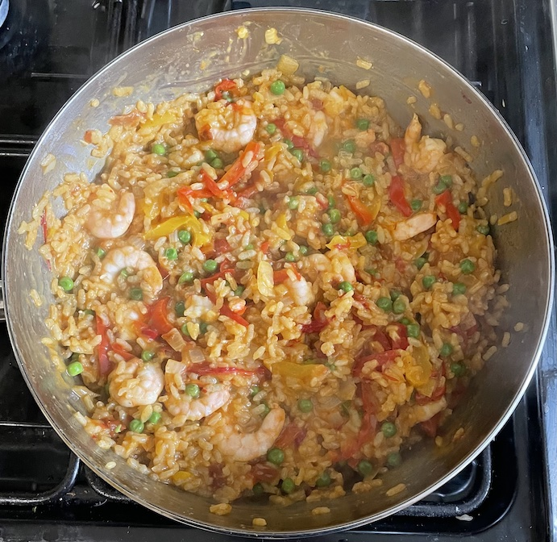

Paella
- Heat for 10 mins
- olive oil
- 1 onion chopped
- 1 red pepper sliced
- 1 yellow pepper sliced
- Add and heat for 2 mins
- Add and mix well
- 250g paella rice
- 3 sun-dried tomatoes chopped
- large pinch of saffron
- 1 tsp sweet smoked paprika
- 1 tsp paprika
- Add and simmer for 20 mins until rice is cooked
- Add and warm for 1 min
- 150g peas defrosted (cooked if no prawns)
- Add and cook until hot
- Scatter with
- parsely chopped
- 2 tsp lemon juice
Serving
Notes
- maybe cook prawns & peas before adding
- optional veg: artichokes, corgette
- optional: chorizo, clams, mussels
